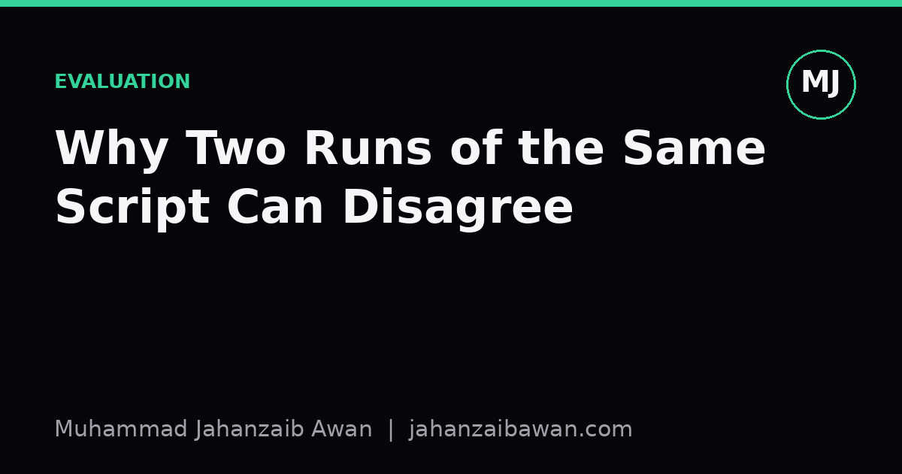

Why Two Runs of the Same Script Can Disagree
Same code, same data, same hyperparameters, yet different results. Here is what actually varies, and why it matters more than most people admit.

The uncomfortable truth about identical scripts
I have run the same training script twice, back to back, with no changes whatsoever, and watched validation accuracy move by a point or two. The first time this happened to me I assumed I had broken something. I had not. This is normal, and it is one of the least discussed problems in applied machine learning. We report a single number from a single run as if it were a fixed property of the method, when in reality it is one sample drawn from a distribution of possible outcomes.
This matters because decisions get made on the back of these numbers. A paper claims a new method beats a baseline by half a point. A team decides to ship model A over model B because it scored higher on a held-out set. If the gap between A and B is smaller than the natural run-to-run variation of either method, the comparison is noise dressed up as a finding. Understanding where that variation comes from is the first step towards not being fooled by it.
Where the randomness actually lives
The most obvious source is weight initialisation. Most networks start from randomly sampled parameters, and the specific values they start at genuinely affect which local region of the loss landscape the optimiser ends up exploring. Change the seed controlling initialisation and you can get a model that converges to a meaningfully different point, even with everything else held fixed. For small or shallow networks this effect is modest. For deep networks trained on limited data, it can shift accuracy by a percentage point or more.
Data shuffling is the second big one. Stochastic gradient descent and its variants process data in mini-batches, and the order in which examples arrive changes the sequence of gradient updates the model actually sees. Two runs with different shuffle orders are, in a real sense, two different optimisation trajectories. Add dropout, which randomly zeroes activations during training, and data augmentation, which randomly perturbs inputs, and you have several independent sources of stochasticity compounding on top of each other.
Then there is hardware-level non-determinism, which surprises people the most. Many GPU operations, particularly reductions and certain convolution algorithms, do not guarantee a fixed order of floating-point summation across runs. Floating-point addition is not associative, so summing the same numbers in a different order produces a slightly different result. These differences are tiny at first, often in the tenth or eleventh decimal place, but they get amplified through hundreds of thousands of gradient updates. By the end of training, a difference that started as rounding noise can translate into genuinely different final weights.
Library versions and backend settings add a quieter layer of variation. A minor update to a numerical library can change which low-level kernel gets selected for a given operation, which changes the exact arithmetic performed, which changes the trajectory again. None of this is a bug. It is the normal behaviour of systems optimised for speed rather than bit-for-bit reproducibility.

A worked example of why this matters
Imagine two text classifiers, model A and model B, trained on the same dataset with the same architecture, differing only in a tweak to the learning rate schedule. You train each once and get eighty-seven point four per cent accuracy for A and eighty-six point nine per cent for B. It is tempting to conclude A is better by half a point.
Now suppose you had instead trained each model five times with different random seeds, keeping everything else fixed. Model A gives you accuracies of 86.8, 87.4, 87.1, 86.6, and 87.5, averaging around 87.1 with a spread of roughly one point. Model B gives you 86.5, 87.0, 86.9, 87.3, and 86.6, averaging around 86.9 with a similar spread. The two distributions overlap heavily. The single-run comparison you started with, 87.4 versus 86.9, sits comfortably inside the noise band of either model. You cannot responsibly claim A is better based on that one pair of numbers, even though the headline figures look decisive.
This is not a hypothetical edge case. It is the default situation whenever the true effect of a change is small relative to training variance, which in my experience is most of the time for incremental tweaks. Large architectural changes or genuinely better data tend to produce effects big enough to survive this scrutiny. Small hyperparameter nudges usually do not, and treating a single lucky or unlucky run as proof of superiority is one of the most common errors I see in applied work.
What to actually do about it
The practical fix is not glamorous: run multiple seeds and report a mean with a spread, whether that is a standard deviation, a range, or a confidence interval. Three to five runs is a reasonable minimum for most applied comparisons, more if the stakes are high or the expected effect is small. This costs compute, and I understand why it gets skipped under deadline pressure, but a single number without any sense of its variability is not really evidence of anything.
It also helps to separate the sources of variance you can control from the ones you cannot. Fixing the random seed for data shuffling and initialisation makes a run reproducible on the same hardware and software stack, which is useful for debugging and for verifying that a code change did what you intended. But it gives a false sense of security if you then claim the result is representative of the method in general, because you have only sampled one point from the distribution, deterministically.
Finally, be honest in how results are presented, to others and to yourself. If a new method beats a baseline by an amount smaller than the observed run-to-run spread, say so plainly rather than quietly picking the best run. Reviewers, colleagues, and future you will thank you for the extra rigour, and you will spend far less time chasing improvements that were never really there.